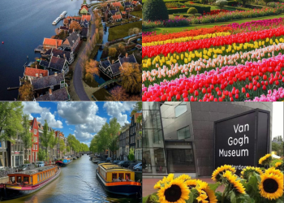

| Japan - Asia |
|
A land where ancient traditions beautifully intertwine with futuristic innovation, Japan offers serene temples, vibrant neon cities, exquisite cuisine, and the unique cultural richness of a society that truly values hospitality and precision. Its stunning natural landscapes, from cherry blossoms to snow-capped mountains, provide a breathtaking backdrop to an unforgettable journey. |
| China - Asia |
|
Home to one of the world's oldest continuous civilizations, China presents an unparalleled journey through history with wonders like the Great Wall and the Terracotta Army, alongside futuristic skylines and diverse landscapes ranging from towering mountains to vast deserts. It's an immersive experience in a rapidly evolving global power with profound cultural depth. |
| South Korea - Asia |
|
A dynamic country where ancient palaces stand alongside cutting-edge technology, South Korea captivates visitors with its vibrant K-pop culture, delicious street food, serene temples, and stunning natural beauty. Its unique blend of tradition and modernity, coupled with incredibly efficient infrastructure, makes for an endlessly fascinating exploration. |
| Hong Kong - Asia |
|
A dazzling metropolis where East meets West, Hong Kong offers a thrilling sensory overload with its iconic skyscraper-studded skyline, bustling street markets, world-class dining, and lush green islands just a short ferry ride away. Its unique blend of British colonial history and vibrant Chinese culture creates an unforgettable urban adventure. |
| Thailand - Asia |
|
Known as the "Land of Smiles", Thailand entices with its captivating blend of ancient temples, bustling markets, pristine beaches, and world-renowned cuisine. From the vibrant energy of Bangkok to the tranquil beauty of its southern islands and the cultural richness of the north, it promises an exotic and unforgettable escape. |
| France - Europe |
|
The epitome of romance and sophistication, France beckons with its unparalleled artistic heritage, from the masterpieces of the Louvre to the architectural marvels like the Eiffel Tower and Notre-Dame, alongside exquisite cuisine and world-famous wines. Beyond Paris, charming villages, sun-drenched vineyards, and stunning coastlines offer a diverse and enchanting experience. |
| Italy - Europe |
|
A living museum of history, art, and culture, Italy captivates with its ancient Roman ruins, Renaissance masterpieces, charming medieval towns, and a culinary tradition that is celebrated worldwide. From the romantic canals of Venice to the rolling hills of Tuscany and the dramatic coastlines of Amalfi, every region offers a unique and unforgettable journey through beauty and passion. |
| Netherlands - Europe |
 |
Famous for its picturesque canals, vibrant tulip fields (in spring), and iconic windmills, the Netherlands offers a charming blend of historic beauty and progressive culture, all easily explored by bicycle. Its world-class museums, friendly cities like Amsterdam, and quaint villages provide a uniquely delightful and relaxed European experience. |
| United States - North America |
|
A continent of diverse landscapes and cultures, the United States offers everything from the glittering skylines of New York City and the historical richness of Washington D.C. to the breathtaking natural wonders of the Grand Canyon and Yellowstone, alongside sun-drenched beaches and vibrant music scenes. It's a vast country promising an adventure for every interest. |